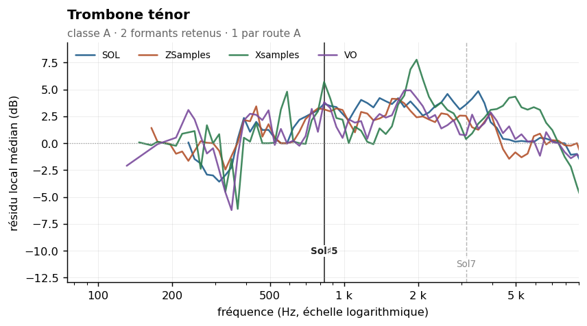
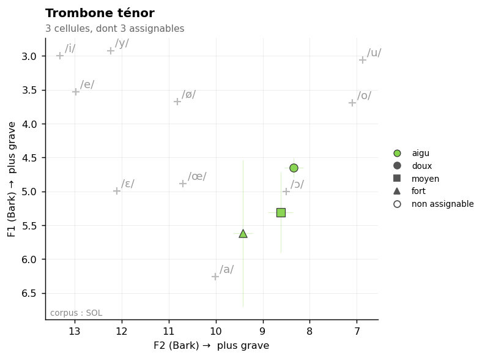

Tenor trombone
Sommaire › Les cuivres
| Classe | Provenance | Échantillons | Tessiture | Formants établis |
|---|---|---|---|---|
| A | IRCAM | 117 | A | 1 |
| Formant | Note | Corpus | Localisation |
|---|---|---|---|
| 830 Hz | Sol♯5 | SOL ZSamples Xsamples VO |


Statut des formants — révision du 26/10/2026
Confrontation des cinq corpus. Provenance de ce corpus : IRCAM (FullSOL2020).
Formant Statut 830 Hz route A — SOL + VO + Xsamples + ZSamples au même point de grille, 835 Hz · zone vue par SOL, VO, Xsamples, ZSamples 1567 Hz indéterminé — concordance à un demi-ton avec ZSamples mais aucun couple au même point de grille. Environ une concordance sur quatre à ce seuil est fortuite. 2091 Hz indéterminé — concordance à un demi-ton avec Xsamples mais aucun couple au même point de grille. Environ une concordance sur quatre à ce seuil est fortuite. 3134 Hz présent dans le seul corpus SOL
etendue_residudans l'en-tête n'est pas une largeur de bande : c'est l'étendue du résidu de la méthode 8, souvent une butée de plage. Les largeurs mesurées sont dans_LARGEURS-DE-BANDE.md.
Méthode 8 — quatre formants retenus, aucun rejeté. Classe A nettement établie. Voir
00-METHODE.md.
Le trombone ténor est, avec le trombone basse, le cuivre dont le caractère de classe A est le mieux établi : ρ = 0,27, du même ordre que le hautbois. Contrairement au cor et à la trompette, son spectre ne suit ni la hauteur ni fortement la dynamique — la dispersion de pente n'est que de 2,5 dB/octave, contre 5,0 pour la trompette.
Avec 117 échantillons, une médiane de 62 harmoniques par note et une enveloppe vraie très stable (538 Hz, σ = 174 Hz), toutes les conditions sont réunies. C'est le seul cuivre dont les quatre candidats détectés passent les deux tests de rejet : aucun rejet, aucun cas fragile.
Comme pour tous les cuivres, l'analyse par dynamique reste souhaitable, mais elle est ici moins urgente.
| Zone | Résidu | Largeur −3 dB | Notes distinctes | Verdict |
|---|---|---|---|---|
| 830 Hz | +3,3 dB | 415–4 695 Hz | 14 | retenu |
| 1 567 Hz | +3,9 dB | 622–4 183 Hz | 23 | retenu |
| 2 091 Hz | +3,2 dB | 415–4 974 Hz | 27 | retenu |
| 3 134 Hz | +3,9 dB | 622–4 183 Hz | 32 | retenu |
| Zone | k = 2–3 | k = 4–7 | k = 8–15 | k ≥ 16 | Robustesse |
|---|---|---|---|---|---|
| 830 Hz | +3,7 | +3,8 | +3,5 | — | oui |
| 1 567 Hz | — | +4,3 | +4,1 | +3,3 | oui |
| 2 091 Hz | — | +2,2 | +2,3 | +2,6 | oui |
| 3 134 Hz | — | +4,6 | +4,4 | +3,4 | oui |
La régularité est remarquable : pour chaque formant, le résidu varie de moins de 1 dB entre les groupes de rang. C'est la signature d'une résonance véritablement indépendante de la hauteur — le critère est satisfait non pas de justesse mais largement.
En revanche, les bandes à −3 dB sont larges et se recouvrent. Les quatre formants forment peut-être une série de modes plutôt que quatre résonances indépendantes : leurs positions (830, 1 567, 2 091, 3 134 Hz) sont approximativement dans les rapports 1 : 1,9 : 2,5 : 3,8. À examiner.
| Descripteur | Valeur | Lecture |
|---|---|---|
| Pente spectrale médiane | −15,6 dB/octave (σ 2,5) | régulière, peu sensible à la dynamique |
| Harmoniques par note | 62 [20–90] | spectre très riche |
| Balance impair − pair | −2,8 dB | tuyau cylindrique à pavillon |
| Enveloppe vraie (méthode 6) | 538 Hz, σ 174 | stable |
| Fraction de pics sur un harmonique | 0 % | ordre adaptatif valide |
| Source | Valeur annoncée | Notre mesure | Accord |
|---|---|---|---|
| Backus (1969) | 500 Hz | env. vraie 538 Hz | bon |
| Giesler (1985) | 520–600 Hz, o-ähnlich | env. vraie 538 Hz | bon |
| Meyer (2009) | 480–600 Hz et ~1 200 Hz | env. vraie 538 Hz ; formant 1 567 Hz | bon |
Ancien pipeline specenv |
F1 = 237 Hz, zone /u/ | — | zone de la fondamentale |
| Ancien Fp | 1 218 Hz | formant retenu 1 567 Hz | proche |
Le cas du trombone est instructif sur le plan du diagnostic. L'ancienne étude relevait que « Backus 500, Giesler 520–600 et Meyer 480–600 correspondent au Fp = 1 218 Hz, pas au F1 strict » de 237 Hz, et en concluait que « sa fusion avec les instruments de la zone /o/ opère via le Fp ». Ce raisonnement était bancal : il rapprochait des valeurs de 500 Hz d'un Fp de 1 218 Hz, soit plus d'une octave d'écart, en invoquant un mécanisme non mesuré.
La mesure actuelle tranche : les trois sources classiques avaient raison, et c'est notre enveloppe vraie à 538 Hz qui le confirme. Le F1 de 237 Hz était la zone de la fondamentale, et le Fp de 1 218 Hz une mesure de pente bornée. Les sources n'avaient pas besoin d'être réconciliées par un mécanisme : elles étaient simplement justes.
Data/registres.md : sons pédale E1–A#1 · grave A#1–E3 · médium E3–E4 · aigu au-dessus.
Mesure par registre : non effectuée.
Note sur l'ancienne analyse par registre : elle donnait F1 = 215 Hz au grave, 301 Hz au médium et 431 Hz à l'aigu — une progression qui suit les fondamentales des registres. La « convergence exacte Δ = 0 Hz » annoncée entre le trombone grave et le chalumeau de la clarinette était donc la rencontre de deux zones de fondamentale.
Rang du formant dans son propre spectre : 50 % signifie que les deux méthodes ne s'accordent pas mieux là qu'ailleurs. Voir ../_APPARIEMENT-LPC.md.
| Formant | Statut | Rang |
|---|---|---|
| 3134 Hz | 1 corpus | 77,8 % |
Part de pics non localisables — l'enveloppe n'y redescend pas de 3 dB des deux côtés, donc le formant n'a pas de largeur mesurable. Voir ../_LARGEUR-PAR-REGISTRE.md.
| doux | moyen | fort | |
|---|---|---|---|
| tous registres | 59 % | 45 % | 11 % |
| grave | 69 % | 50 % | 7 % |
| médium | 36 % | — | 8 % |
| hors registre | 67 % | 43 % | — |
Effet doux → fort : +48 points. La localisation s'améliore en jeu fort.
20 paires calculées. Fusion moyenne : 27 %. Voir ../_MELANGES.md.
| Couleur nouvelle avec | Se fond avec | ||
|---|---|---|---|
| Hautbois | 60 % | Basson | 51 % |
| Contrebasse | 42 % | Trombone basse | 51 % |
| Violoncelle | 41 % | Violon | 43 % |
À compléter. Éléments acquis :
Aucun à ce stade. Figures prévues dans ../Versions-html-and-docx/media/ :
| Fichier prévu | Contenu |
|---|---|
trombone_composite.png |
enveloppe composite — quatre formants, tous retenus : bonne figure de référence |
trombone_rangs.png |
résidu par groupe de rang : illustration de la régularité |
trombones_pupitre.png |
superposition trombone ténor / trombone basse |
trombone_litterature.png |
positions de Backus, Giesler et Meyer reportées sur l'enveloppe vraie |